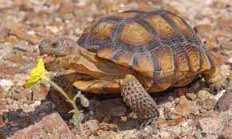

TORTUGA DEL DESIERTO
El comercio ilegal de su carne, huevos e incluso de los tortuguillos –con la finalidad de tenerlos como mascotas– se ha convertido en la principal amenaza para la tortuga charapa.
En febrero fueron recuperadas 970 tortugas charapa vivas y 237 huevos en Tres Esquinas, a dos kilómetros del municipio de Solano (departamento de Caquetá). De ellas, 700 fueron liberadas el 3 de marzo, Día Mundial de la Vida Silvestre. Las restantes están en la unidad operativa de la llanura amazónica esperando ser reubicadas
 |